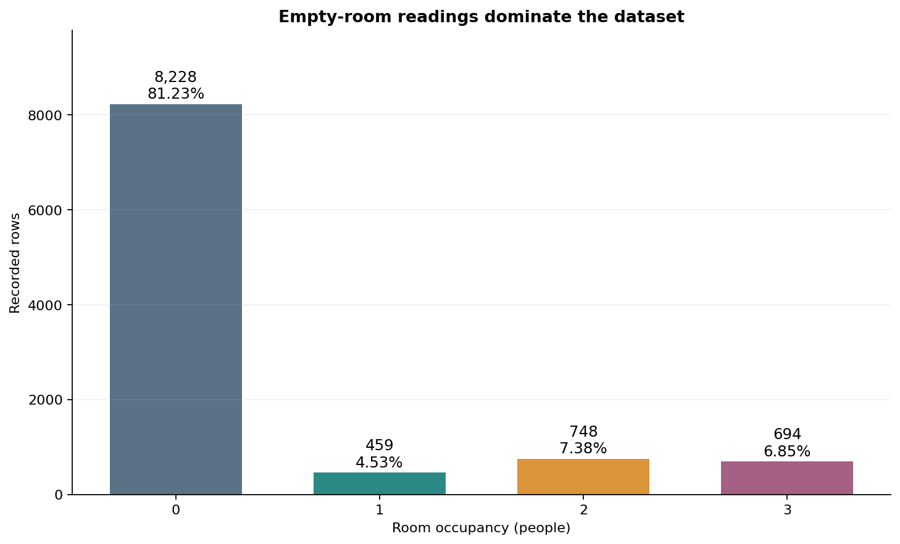
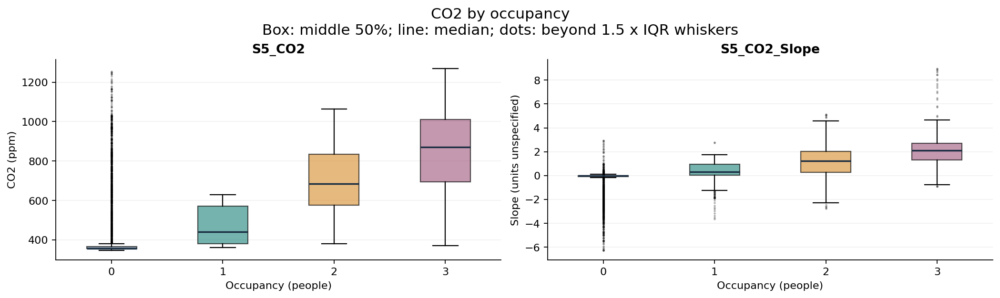
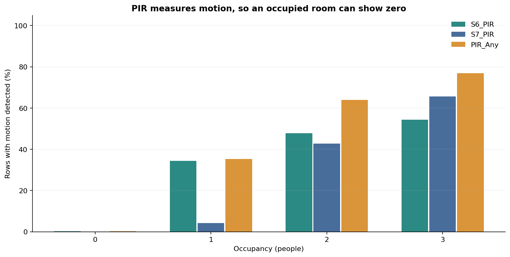
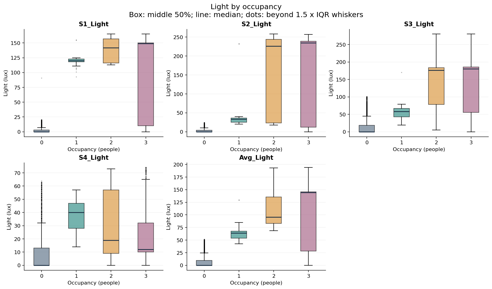
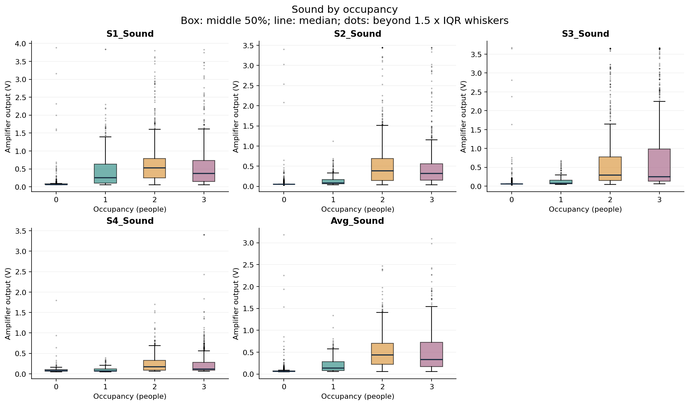
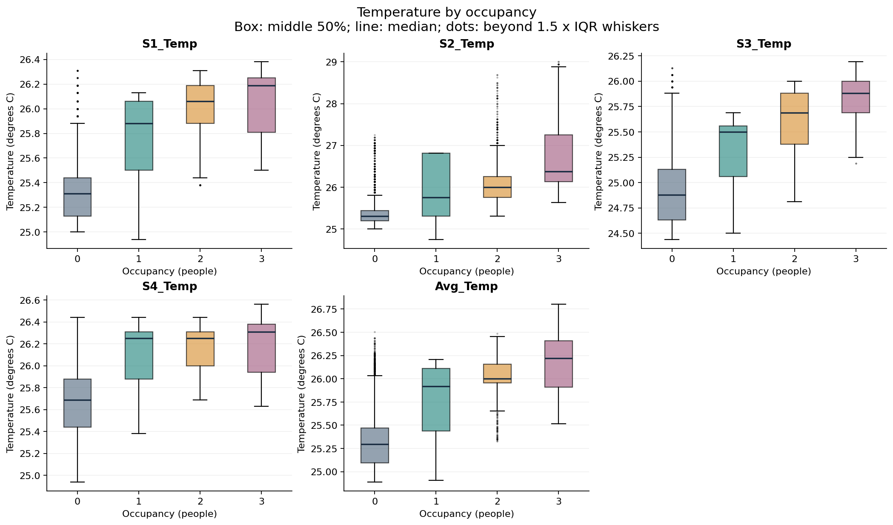
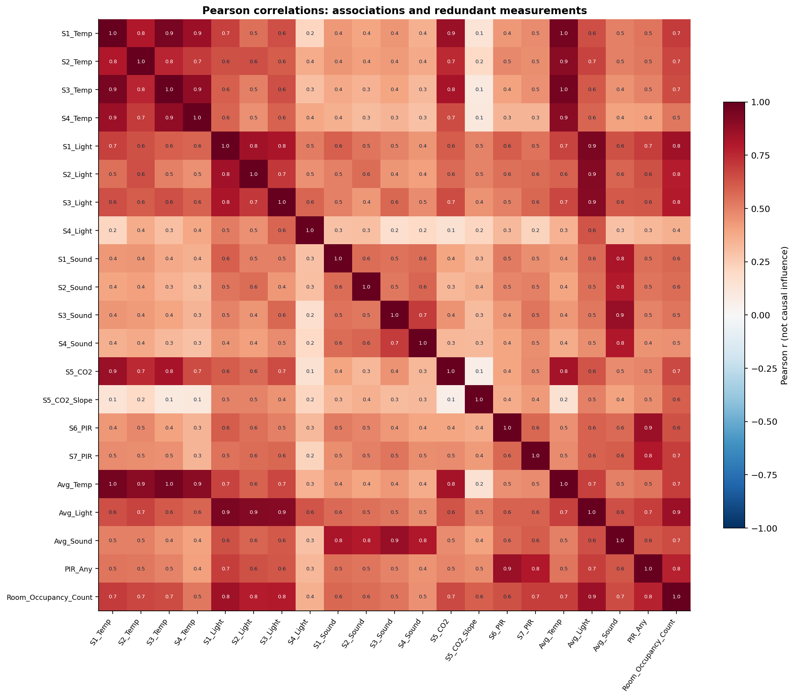
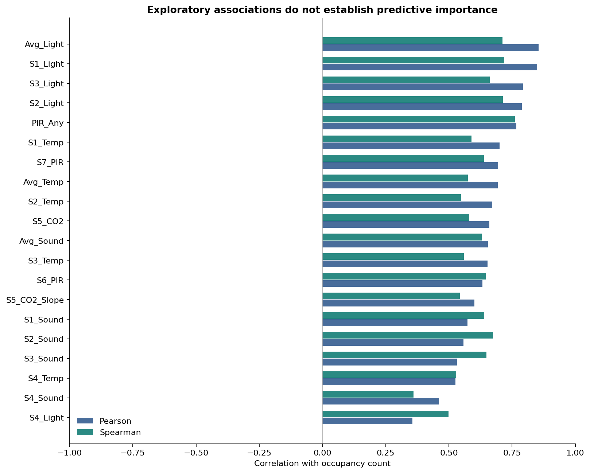
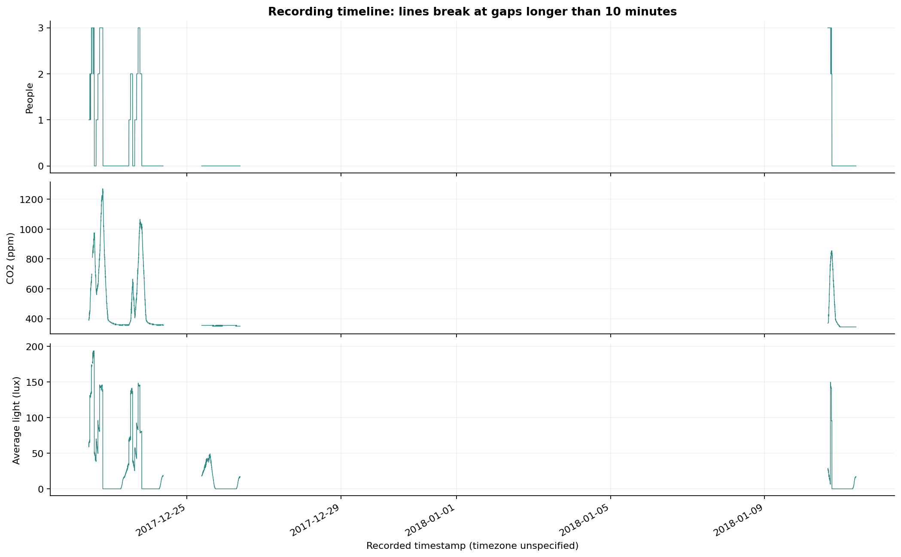
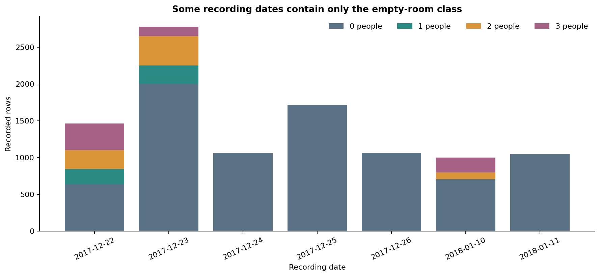

Adaptive Smart Room Occupancy & Energy Controller
Dataset preparation and exploration. No model training, GA, fuzzy control or energy estimates.
What was prepared
The original UCI ZIP and CSV are preserved with checksums. The processed data keep all rows and add timestamp traceability, recording segments and four aggregate indicators. No values were imputed or clipped.
The CSV spans seven calendar dates with recording gaps. Class coverage differs by date. A future evaluation must account for both time and the four occupancy classes.
Detailed notes and viva explanation / Candidate feature rationale / Data dictionary / Run instructions
Occupancy counts
| occupancy | rows | percent |
|---|---|---|
| 0 | 8228 | 81.23 |
| 1 | 459 | 4.53 |
| 2 | 748 | 7.38 |
| 3 | 694 | 6.85 |
Class balance
Empty-room readings dominate; accuracy alone is insufficient.

CO2 and supplied trend
The supplied slope is excluded from the recommended baseline pending window verification.

Motion and occupancy
Rates are within each occupancy class. Motion is not a people count.

Light
Separate positions can carry different information.

Sound
Values are amplifier volts, not decibels. Unusual readings are retained.

Temperature
Temperature changes slowly and can reflect ambient conditions.

Correlation matrix
Strong sensor-to-sensor association can indicate redundancy.

Feature associations
Pearson measures linear association; Spearman measures rank association. Neither is predictive importance.

Recording timeline
No data are inserted into the gaps.

Class coverage across dates
Class 1 occurs only on the first two dates. A simple late holdout will not evaluate all classes.

Recommended Phase 2 inputs: 15 direct channels
| candidate_input | unit | reason |
|---|---|---|
| S1_Temp | degrees C | Local temperature and spatial variation; also sensitive to ambient conditions. |
| S2_Temp | degrees C | Local temperature and spatial variation; also sensitive to ambient conditions. |
| S3_Temp | degrees C | Local temperature and spatial variation; also sensitive to ambient conditions. |
| S4_Temp | degrees C | Local temperature and spatial variation; also sensitive to ambient conditions. |
| S1_Light | lux | Local light information; association may depend on this room's lighting habits. |
| S2_Light | lux | Local light information; association may depend on this room's lighting habits. |
| S3_Light | lux | Local light information; association may depend on this room's lighting habits. |
| S4_Light | lux | Local light information; association may depend on this room's lighting habits. |
| S1_Sound | V | Local activity; amplifier voltage is not decibels. |
| S2_Sound | V | Local activity; amplifier voltage is not decibels. |
| S3_Sound | V | Local activity; amplifier voltage is not decibels. |
| S4_Sound | V | Local activity; amplifier voltage is not decibels. |
| S5_CO2 | ppm | Direct CO2 concentration; may lag arrivals and persist after departures. |
| S6_PIR | 0/1 | Motion coverage at this location; zero does not prove the room is empty. |
| S7_PIR | 0/1 | Motion coverage at this location; zero does not prove the room is empty. |
Optional six-input comparison: Avg_Temp, Avg_Light, Avg_Sound, S5_CO2, S6_PIR and S7_PIR. Averages still require all their underlying physical sensors.
The target, timestamp fields and audit IDs are excluded from inputs. No train/test split has been created. All rows were used for descriptive EDA.
Every original column
| column | role | raw_dtype | processed_dtype | units | missing | unique_values | min | max | example | meaning |
|---|---|---|---|---|---|---|---|---|---|---|
| Date | metadata | object | object | YYYY/MM/DD | 0 | 7 | 2017/12/22 | 2018/01/11 | 2017/12/22 | Recorded date; metadata only |
| Time | metadata | object | object | HH:MM:SS | 0 | 10129 | 00:00:28 | 23:59:58 | 10:49:41 | Recorded time; timezone not supplied |
| S1_Temp | sensor_related | float64 | float64 | degrees C | 0 | 24 | 24.94 | 26.38 | 24.94 | Temperature at node S1 |
| S2_Temp | sensor_related | float64 | float64 | degrees C | 0 | 69 | 24.75 | 29.0 | 24.75 | Temperature at node S2 |
| S3_Temp | sensor_related | float64 | float64 | degrees C | 0 | 29 | 24.44 | 26.19 | 24.56 | Temperature at node S3 |
| S4_Temp | sensor_related | float64 | float64 | degrees C | 0 | 27 | 24.94 | 26.56 | 25.38 | Temperature at node S4 |
| S1_Light | sensor_related | int64 | int64 | lux | 0 | 68 | 0 | 165 | 121 | Light at node S1 |
| S2_Light | sensor_related | int64 | int64 | lux | 0 | 82 | 0 | 258 | 34 | Light at node S2 |
| S3_Light | sensor_related | int64 | int64 | lux | 0 | 177 | 0 | 280 | 53 | Light at node S3 |
| S4_Light | sensor_related | int64 | int64 | lux | 0 | 75 | 0 | 74 | 40 | Light at node S4 |
| S1_Sound | sensor_related | float64 | float64 | V | 0 | 231 | 0.06 | 3.88 | 0.08 | Sound amplifier voltage at node S1, not decibels |
| S2_Sound | sensor_related | float64 | float64 | V | 0 | 185 | 0.04 | 3.44 | 0.19 | Sound amplifier voltage at node S2, not decibels |
| S3_Sound | sensor_related | float64 | float64 | V | 0 | 258 | 0.04 | 3.67 | 0.06 | Sound amplifier voltage at node S3, not decibels |
| S4_Sound | sensor_related | float64 | float64 | V | 0 | 106 | 0.05 | 3.4 | 0.06 | Sound amplifier voltage at node S4, not decibels |
| S5_CO2 | sensor_related | int64 | int64 | ppm | 0 | 186 | 345 | 1270 | 390 | CO2 concentration at node S5 |
| S5_CO2_Slope | sensor_related | float64 | float64 | unspecified | 0 | 1579 | -6.296154 | 8.980769 | 0.769231 | Supplied CO2 window slope; alignment and time units unverified |
| S6_PIR | sensor_related | int64 | int64 | 0/1 | 0 | 2 | 0 | 1 | 0 | Motion detection at node S6; not a count of people |
| S7_PIR | sensor_related | int64 | int64 | 0/1 | 0 | 2 | 0 | 1 | 0 | Motion detection at node S7; not a count of people |
| Room_Occupancy_Count | target | int64 | int64 | people | 0 | 4 | 0 | 3 | 1 | Manually recorded occupancy class, 0 to 3 |
Source and limits
Singh, A. & Chaudhari, S. (2018). Room Occupancy Estimation, UCI Machine Learning Repository. CC BY 4.0. Original source details and hashes are in data/raw/source_manifest.json.
This is occupancy data from one setup. There are no measured electricity labels. Future energy savings must be explicitly simulated. Performance in other rooms remains unverified.